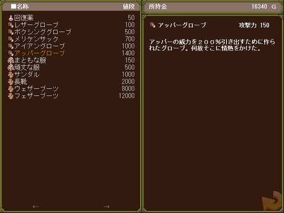

■３．６ ショップ
| |

| １．アイテムの購入 |
| |
アイテムを購入してルカに装備させると、ルカを強化することができます。
アイテムはステージをクリアすると解禁されていきます。ステージ毎に解禁されるアイテムが決まっていて、難易度の高いステージほど強いアイテムが解禁されます。
また、一度出現した消費アイテムがショップに並び、以降は何個でも購入可能です。
グローブや衣服などの装備アイテムは一度買うと二度とショップに並びません。
Ｚキーを押しながらアイテムを選択すると、確認画面無しでアイテムを購入することが出来ます。
|
|
|